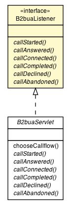

|
||||||||||
| PREV CLASS NEXT CLASS | FRAMES NO FRAMES | |||||||||
| SUMMARY: NESTED | FIELD | CONSTR | METHOD | DETAIL: FIELD | CONSTR | METHOD | |||||||||

public interface B2buaListener
| Method Summary | |
|---|---|
abstract void |
callAbandoned(SipServletRequest outboundRequest)
This method is called in response to receiving a CANCEL request. |
abstract void |
callAnswered(SipServletResponse outboundResponse)
Called after a 200 OK is received. |
abstract void |
callCompleted(SipServletRequest outboundRequest)
This method is called after receiving a BYE request. |
abstract void |
callConnected(SipServletRequest outboundRequest)
This method is called after the ACK for the initial INVITE is received. |
abstract void |
callDeclined(SipServletResponse outboundResponse)
This method is called after receiving an error status (like 404). |
abstract void |
callStarted(SipServletRequest outboundRequest)
Called upon an initial INVITE. |
| Method Detail |
|---|
void callStarted(SipServletRequest outboundRequest)
throws ServletException,
IOException
outboundRequest - copy of the initial INVITE to be modified before sending
ServletException - an exception
IOException - an exception
void callAnswered(SipServletResponse outboundResponse)
throws ServletException,
IOException
outboundResponse - modifiable successful response object
ServletException - an exception
IOException - an exception
void callConnected(SipServletRequest outboundRequest)
throws ServletException,
IOException
outboundRequest - a modifiable ACK request
ServletException - an exception
IOException - an exception
void callCompleted(SipServletRequest outboundRequest)
throws ServletException,
IOException
outboundRequest - a modifiable BYE request
ServletException - an exception
IOException - an exception
void callDeclined(SipServletResponse outboundResponse)
throws ServletException,
IOException
outboundResponse - a modifiable error response.
ServletException - an exception
IOException - an exception
void callAbandoned(SipServletRequest outboundRequest)
throws ServletException,
IOException
outboundRequest - a modifiable CANCEL request
ServletException - an exception
IOException - an exception
|
||||||||||
| PREV CLASS NEXT CLASS | FRAMES NO FRAMES | |||||||||
| SUMMARY: NESTED | FIELD | CONSTR | METHOD | DETAIL: FIELD | CONSTR | METHOD | |||||||||